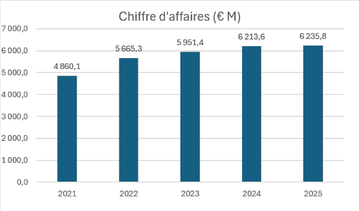

Économie de Dassault Systèmes
Dassault Systèmes est une entreprise française spécialisée dans les logiciels et les technologies 3D. Voici quelques données permettant de présenter sa situation économique.
Chiffres clés
| Indicateur | Valeur |
|---|---|
| Chiffre d'affaires en 2025 | 6,24 Md € |
| Collaborateurs | 25 000 |
| Clients | 390 000+ |
Évolution du chiffre d'affaires
| Année | Chiffre d'affaires |
|---|---|
| 2023 | 5,95 Md € |
| 2024 | 6,21 Md € |
| 2025 | 6,24 Md € |

Le graphique montre que le chiffre d'affaires augmente chaque année depuis 2021. Il passe d'environ 4,9 milliards d'euros en 2021 à plus de 6,2 milliards en 2025. La plus forte hausse a lieu entre 2021 et 2022, puis la croissance ralentit, surtout entre 2024 et 2025 où le chiffre d'affaires est presque stable.
Activités
| Activité | Part |
|---|---|
| Innovation industrielle | 56 % |
| Sciences de la vie | 19 % |
| Innovation grand public | 25 % |
Situation économique
Dassault Systèmes réalise plusieurs milliards d'euros de chiffre d'affaires chaque année. L'entreprise développe principalement des logiciels et des services numériques pour différents secteurs. La plus grande partie de son activité vient de l'innovation industrielle (56 %), c'est-à-dire des logiciels utilisés par des industries comme l'aéronautique ou l'automobile.